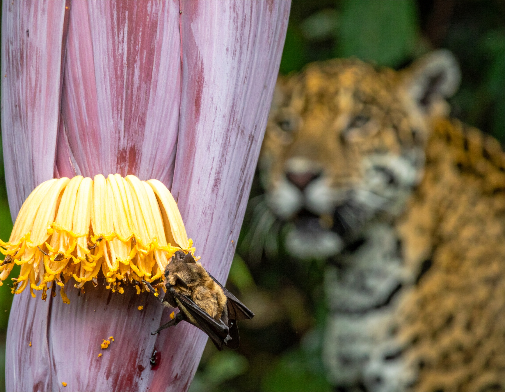
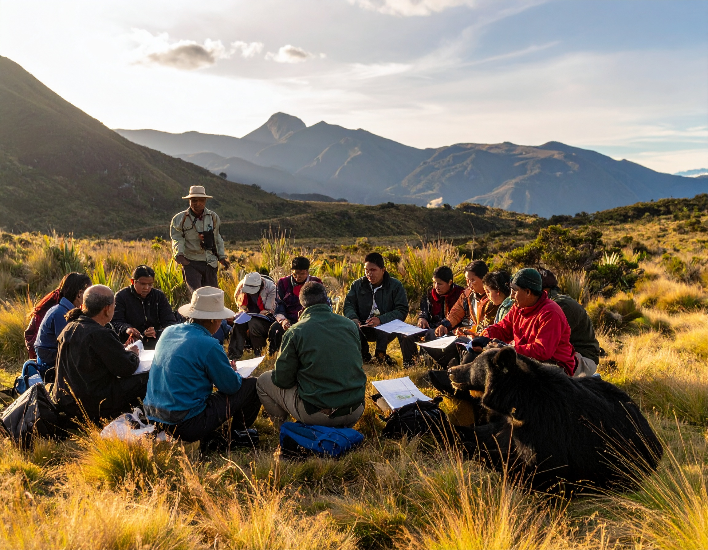
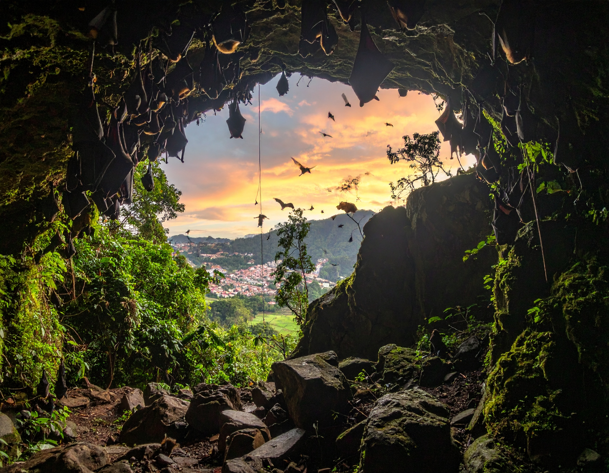
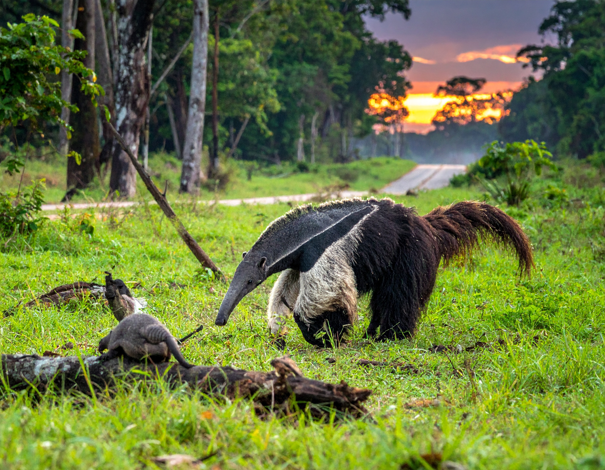
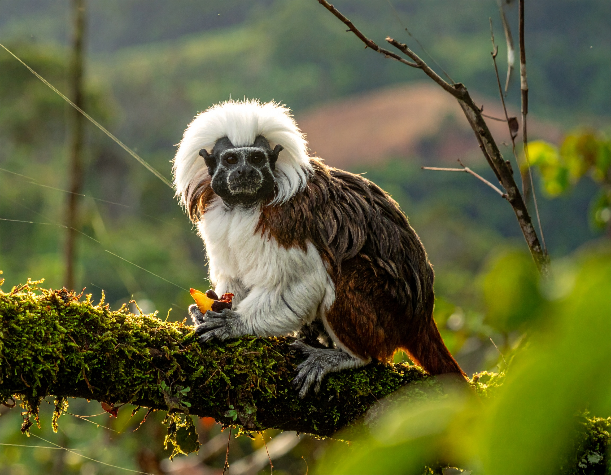
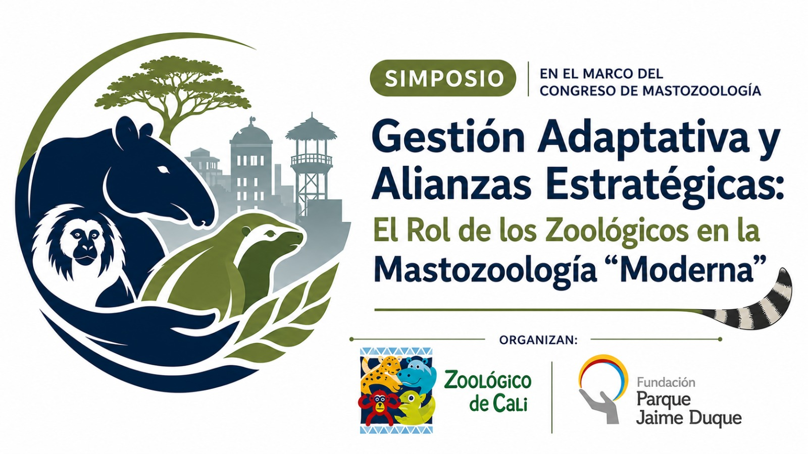

Conoce los simposios temáticos, organizadores y detalles de cada actividad académica del VICCM 2026

Kevin González Gutiérrez John Harold Castaño Salazar
Las interacciones tróficas son fundamentales para comprender procesos ecológicos a nivel de individuo, especie, población y comunidad, ya que permiten analizar aspectos comportamentales, metabólicos, fenológicos, geográficos y dependientes de la escala en la transformación del paisaje.
Ecología Método

Miguel E. Rodríguez-Posada Dora Catalina Concha Osbahr Bibiana Gómez-Valencia Andrea Natalia Martínez Bulla
Recientemente se ha incrementado la participación de actores sociales, especialmente las comunidades locales, en las estrategias de gestión y conservación de la biodiversidad en sus territorios para garantizar su efectividad bajo su propia gobernanza.
Conservación Monitoreo Comunitario Gobernanza

Liceth Margarita Suárez Payares Tomás Villada-Cadavid Melquisedec Gamba-Ríos Sandra Bernal Yesyca Andrea López Bolaños Ana María Ávila García Diana Carina Vallejo Cardozo
Bastaron dos décadas para percatarnos acerca de lo imperativo de proponer nuevas estrategias para el estudio de los refugios de murciélagos en Colombia.
Ecología Conservación Murciélagos

Carlos Aya Cuero Maria Jose Andrade Julio Chacón Pacheco Catalina Perez Nathalia Niño Cesar Rojano
El VI Simposio Colombiano de Perezosos, Armadillos y Hormigueros da continuidad a los cinco encuentros previos que han consolidado un espacio técnico y científico dedicado al estudio y conservación de los xenartros en el país.
Ecología Xenartros Perezosos

Sebastián García Restrepo Sebastián O. Montilla María Gabriela Luna Conde Rafael Santiago Escucha Ramírez Efraín Camilo Mora Cruz Sergio González Linares
Colombia alberga una alta riqueza de especies de primates (alrededor de 38 a 40 especies) y a lo largo de los años se ha posicionado como un referente latinoamericano en cuanto al potencial de investigación y a las capacidades de sus profesionales y grupos de investigación en Primatología.
Ecología Conservación Primates

Dave Wehdeking Catalina Rodríguez Álvarez Sandra Marcela Gómez Carlos Andrés Galvis Leonardo Arias Bernal
La conservación de los mamíferos enfrenta desafíos cada vez más complejos que requieren enfoques integrados y una colaboración efectiva entre múltiples actores.
Ecología Conservación Gestión Adaptativa Zoológicos
Catalina Rodriguez César Rojano Mónica Peñuela Salgado Juan Camilo Rubiano Pérez Mariana Zanotti Tavares de Oliveira Ginna Gómez Junco Diana Alejandra Moncada Garzón Katherine Pérez Gómez Angie Tinoco Sotomayor Luisa Fernanda Blanco Uribe Carlos Ágamez López Oscar Ducuara Mariana Vélez Orozco María Camila Machado Aguilar
Este simposio busca generar un espacio de encuentro e intercambio entre investigadores, docentes, estudiantes, organizaciones e iniciativas que desarrollan procesos de comunicación, sensibilización y enseñanza relacionados con la conservación de mamíferos.
Conservación Comunicación Enseñanza
Espacio disponible
Espacio disponible
Espacio disponible
Espacio disponible
Espacio disponible
Espacio disponible
Espacio disponible